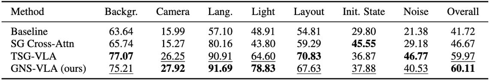
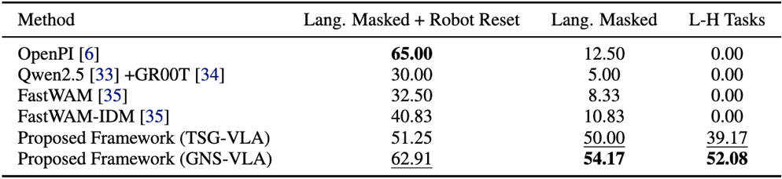
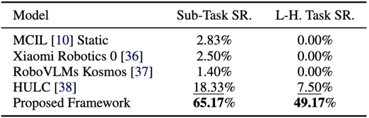

Simulation Evaluation
We evaluate the proposed framework on LIBERO-10-Plus benchmark spanning different numbers of subtasks, diverse subtask combinations, and multiple ordering permutations. Table 1 shows that scene-graph reasoning improves the robustness of the baseline, with particularly strong gains under language and visual perturbations.
Table 1: Success Rate on LIBERO-10-Plus under Different Perturbation Categories.

We further evaluate the proposed framework on our improved LIBERO and CALVIN benchmarks, which are specifically designed for zero-shot long-horizon compositional manipulation, requiring models to compose familiar primitives into unseen multi-step task sequences. Table 2 presents results on the proposed LIBERO long-horizon compositional benchmark.
Table 2: Success Rate on the Proposed LIBERO Long-horizon Compositional Benchmark.

The results on the CALVIN OOD benchmark shown in Table 3 further demonstrate the effectiveness of the proposed framework, showing that GNS-VLA achieves stronger compositional performance compared with generalist VLA and world-model baselines.
Table 3: Full-instruction evaluation on the Proposed CALVIN OOD Long-horizon Benchmark.
